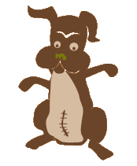

spaying and neutering is easy.
Yes, easy. Easy for you, mostly easy for your pet. Pets are most often put under during the operation, just as you are for surgery. It is recommended that kittens and puppies be fixed as soon as possible, as early as 8 weeks old, before they are even able to reproduce.
it can be affordable.
While you may expect to be charged a sizeable fee from a regular veterinarian, don't despair! There are many cost-effective ways to spay or neuter your pet. Often there are low-cost clinics in your community ready to help you out! You can check your local newspaper for information, ask a veterinarian or local human society, or visit the ASPCA website to find a clinic or program near you.
you and your pet will be happier.
Neutering your male pet can prevent unwanted behaviors, such as: spraying in cats, taking long journeys to find mates, and aggression toward your or other animals. Spaying your female pet will ensure that you will never have to listen to your cat or dog's lover calls all night long again! The "need to breed" can be quite distressful for both pet and owner, so spaying and neutering can keep the peace.